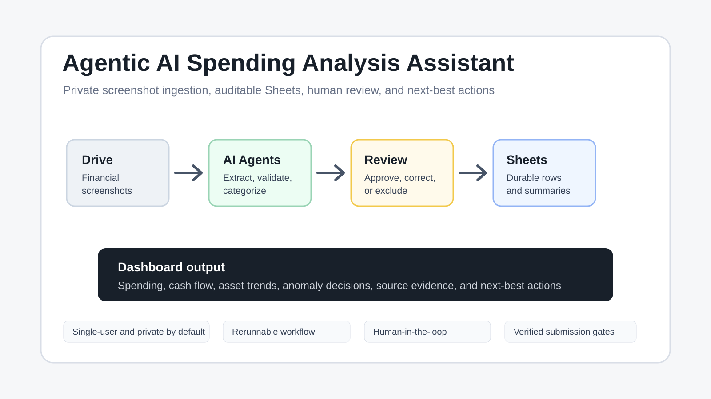

0:00-0:20 | Concierge Agents
Agentic AI Spending Analysis Assistant
A private, single-user assistant that turns financial screenshots into auditable Sheet rows, review decisions, anomaly checks, and dashboard guidance.
Google Drive
Google Sheets
Human Review
Review Only

Speaker note
This is Agentic AI Spending Analysis Assistant, my Concierge Agents capstone project. It is a private, single-user assistant for turning financial screenshots into auditable spreadsheet data, review decisions, and a dashboard for spending, cash flow, and visible asset trends.